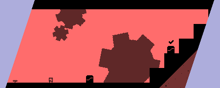
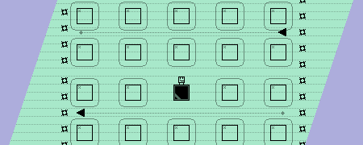
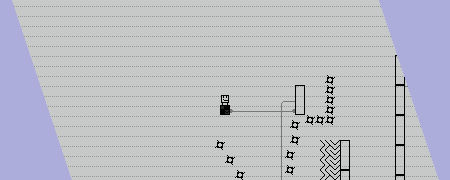
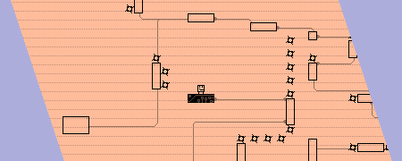
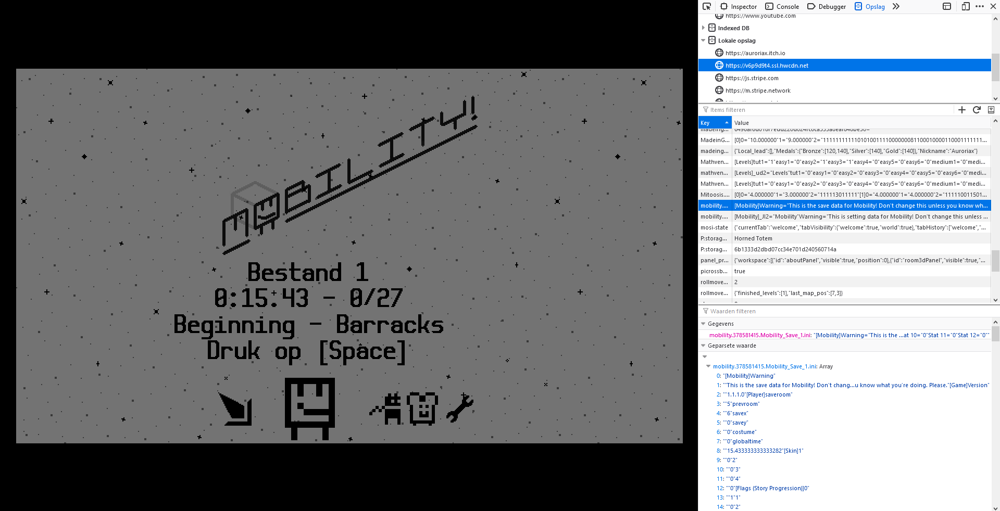

Mobility! Accessible precision platformer
I love precision platformers, but they've always been really difficult. Mobility is my attempt to make the genre more accessible, with different difficulty settings, accessibility options, and a browser version. (Die-hard fans, though, can also ignore all that and just play everything on the highest difficulty. Your choice!)

In Mobility, every platform is a switch you activate upon contact. The goal in each level is to activate all platforms, making each level a little puzzle, especially when you're attempting to score a new record. In the story, these rooms are engine rooms on spaceships that you (a repairman in training) has to fix.
I made this game over two years, in my free time during my game design study. While I am not charging for this game, if you enjoy it consider voting with your wallet to support me with making more games in the future.

For more info about the game, or to sign up to my release mailing, check out the website!
Download
Click download now to get access to the following files:
Development log
- Version v1.2.0 - Maintenance UpdateOct 11, 2021
- Small update: 64-bits Linux build & translation sheet publicJan 14, 2020
- Mobility's First Anniversary & v1.1.1 Update!Feb 17, 2019
- Version v1.0.4 - More bug fixesFeb 26, 2018
- Mobility version V1.0.3 - Bug fixesFeb 19, 2018
- Mobility has released! Soundtrack + looking for translatorsFeb 17, 2018
- Mobility will release on Feb 17 (+ trailer) !Feb 13, 2018
- Devlog #8 - The final stretchDec 28, 2017

Comments
Oh my gosh I played this years ago and tried finding it again because it was so good and I've finally found it!!!
the toast is objectively the best skin.
Great job! i love it!
Very cute, would recommend to anyone who would listen! = )
pretty complex, yet an unbelievably wholesome game
Neat little mechanics, and the art design is very cute :)
Amazing game! sometimes it feels as though the levels weren't designed for some of the harder difficulties though
Really good and reactive game ! :)
AMAZING GAME!
I really enjoyed this and even went back and tried to 100% it. The later levels were frustrating, but I tried to complete every level on at least Vanish mode.
I liked it. On the game player on itch.io, it says I don't have any progress but I played the entire game on coolmathgames.com.
THIS IS SO COOL!!!
Reminds me of VVVVVV kind of
VVVVVV was indeed a huge inspiration for me back when I made this game—not only for its gameplay, but it was also the first time I saw a game that was made mostly by one person, and that's really what helped me get motivated to learn game development! If you're interested, at one point I made a collection with all of the games that (more or less) inspired Mobility: https://itch.io/c/283975/if-you-liked-mobility
holy shit, this game was amazing
Not often I find a game this good. The replayability is astounding. Impressive game you got here, I love it.
very fun game
Wow! I'm very impressed! I thought this game was great! I really like the style, the controls feel good, and the level design is really clever. Nice use of indicators as well. Well done!
The soundtrack is very good! Is there any place I can download or listen to it? The soundtrack link just presents me to an empty bandcamp page without the songs... if you have the songs or a download that would be greatly appreciated!
Hey, sorry for the late reply! The soundtrack used to be there, but it was removed at some point. I haven't talked to the musician for Mobility for quite a while, but I'll do so soon because this is still the most common question I get about the game! In the meanwhile, you can email or Twitter DM me to get a copy. Sorry for the inconvenience!
I wasn't able to install the Windows version when using the itch app sandbox, had a permissions error. A workaround is to install the web version instead.
I've just tried to reproduce this, but it installs and runs properly on my Windows machine using a freshly created sandbox account. Issues with the sandbox are likely out of my hands, sadly. If you'd like to see this issue resolved, do consider filing a bug in the itch app, so their dev team can take a look at it. Hope that helps!
It's fine, I don't know if the error can even be reproduced, the web version works perfectly anyway. I really loved the game, is there a chance we'll see a sequel?
Thanks! My intention is still to make a sequel sometime, but I haven't gotten around to it yet.
at the time of making this im trying to do a all difficulty run (on the web ps the web version is laggy af but its ok im still playing it)
this game is amazing one of the best precision games i´ve played so far ngl cat approves
good game but you can cheese the boss if you use the in radius game mode
Amazing game! I completed the whole game in less than a hour and i am playing it again and again, Thanks for making such a good game.
Thank you for playing!
I have been playing a lot on the browser version and decided to download the zip file. Is there a way to import/export my save data or put it into my new game?

This is not possible in-game, and the game is short enough that you could just replay it for a bit. There is a hacky workaround, though! If you follow these steps and reply with the resulting string of text, I can provide a PC save file for you.
1) Open the game on the site where you played it.
2) Open the developer tools (in most browsers you do this with F12).
3) Open the "Storage" tools.
4) Go to Local Storage. If you've opened the game on itch, you should see a domain ending in hwcdn.net, select that.
5) In the list, find the key that ends with "Mobility_Save_1.ini" (or _2 or _3 depending on which save slots you used). Double click on the value for that key. Press Ctrl+A to select all text, then Ctrl+C to copy it. See image for an example in Firefox.
Here's an example of how the extracted text should look.
Sorry that this is not more convenient. Let me know if you have any questions!
Hey Auroiax! Are you aware that you can actually change game files to basically complete the whole game. I was just playing around with the game files when I stumbled upon the times file.
So I changed all the times to 1.00 and it actually worked! You might want to patch this because now I feel like some secret CIA hacker lol.
This is actually intended, since I wanted people to be able to change the save data for accessibility reasons. Besides, even if I encrypted the data, I expect people who really want to break into it would do so regardless! 👨💻
very cool and fun game
that is all
looks like i beat all levels and debug room levels too yyeyeyeyeyeeyeyeyyeyeey imnot sure i u can find the debug room hahahahahah s s
Hey, I remember playing this on coolmath! I'm gonna have to give this a download (I got it the bundle
Is there some sort of discord or a place where you can share your times?
I've been thinking about opening a Discord server, but until then, the best place is probably here: https://www.speedrun.com/mobility. They also have leaderboards for individual levels, and some people who are currently actively speedrunning the game!
thank you!
I know you asked this five months ago, but there is actually a discord server for this game where you can share level times or full game times. Here is the link.
Using the linux-64 build, the game still doesn't run without having to get libcrypto-1.0.0 and libssl.1.0.0.
Oh, that is curious. Are you running from an Ubuntu-based distro?
I was running from an Ubuntu-based distro (Linux Mint) and I had this problem. My workaround was just downloading the browser version. Someone in the comments below linked the downloads to libcrypto and libssl but it told me I had the wrong ELFCLASS still.
Thanks everyone for reporting this! To properly fix it, I'll probably need to update the game engine to the latest version. It could still take some time before I get around to properly fixing this issue, but I'll look into this sooner or later (and like you noted, you can use the browser version as well).
I recommended this game to a friend who lacks access to a PC at home. He mostly uses a PS4 and an iPad for entertainment.
How hard would it be to add touch controls to the web version, or perhaps controller support?
Also, since you clearly lost interest in developing this project further, have you considered releasing the project files so that new levels could be created? I'm not a GameMaker user (working in pygame and experimenting with Godot), but maybe someone else who else who likes the game might make additions.
Touch control sounds like a good suggestion that would make the game more accessible. I'll look into it!
I've thought about revealing the source code, but the main problem is that you'd need to own Game Maker and deal with my spaghetti code. So I'd rather do a sequel with a proper level editor instead (featuring a user-friendly interface, and support for easily sharing levels). But I'm not really sure if & when that will happen, my other projects have priority at the moment. Sorry!
I would describe this game as 'thoroughly pleasant'. Thanks for making it so easy to choose your own challenge level, as I much prefer a laid back playthrough, and this little game was perfectly relaxing at lower difficulty. =}
this game is the perfect reduction of the the platformer. its so good. really good job. multi controls and 4-btn gameplay expanded to its traditional special moves, double jump wall-jump, etc., and put into a simple but beautiful minimal pixel art frame. just enough story cuz this is a straight platforming and the story simply frames it. im low mobility disabled but i found no problems with a platformer is a huge deal. thanks buddy. cheers
What a lovely game. Give my compliments to the music guy too!
Just beat it! Thanks!!
This looks really good! I'll probably play this on my stream today!
Stream?
like live stream it to a website
Oh
I really love this game. It's one of my favorite indie platforms on itch.io. I only wish there was a level editor or more levels.
I recently upgraded from Linux Mint 18.3 to Ubuntu 19.10 and the game wouldn't work. The linux version is compiled against the 32-bit version of the libssl package, which isn't supported in modern Ubuntu-based distributions.
You can get libcrypto-1.0.0 and libssl.1.0.0 from here. Open the file as an archive and extract the two files to /lib/i386-linux-gnu/ and the game will run.
It would be great to see an updated 64-bit Linux version of the game though
Thanks for the praise, and thanks for bringing my attention to the fact that the Linux build is getting outdated. Sadly, I'm really busy at the moment so it could take a while before I can properly fix this. I've updated the install instructions to warn users for this issue. Thanks for reporting!
Sorry for the delay, but I've finally gotten around to make a 64-bits build! I hope it works for you 😁
Thanks a lot! I still wasn't able to get the game to run on 64 or 32 bit, but it's working a bit better. The game launches now, but it crashes immediately. I guess I can play the browser verison.
Great game I really like it specially the gameplay and music :D
Thanks for playing! :D
what about the other rooms on the first ship
You mean on the Beginning? Those are for the employees of the Mobility, not for the trainees. No access for you, sorry :P
also make it so you could become a employee of the mobility if you beat all levels [including the ones on the debug room] on corrupting blocks mode [just an idea]
Those are all nice ideas for a sequel, which I still really want to make, but I'm still working on other games 👾
Thank you! I responded to your comment on Twitter as well, but to anyone wondering: If you hold both [R] and [Space] on a save slot for five seconds, it will wipe it.